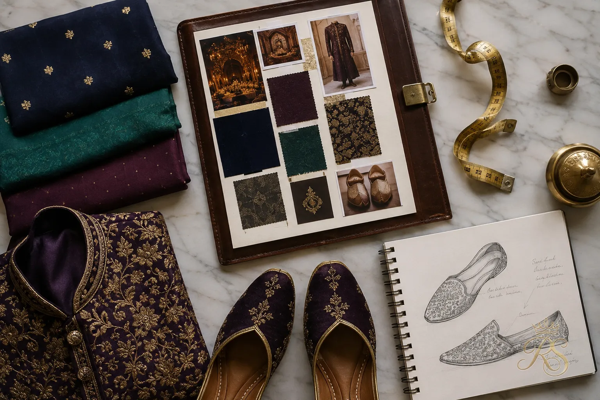
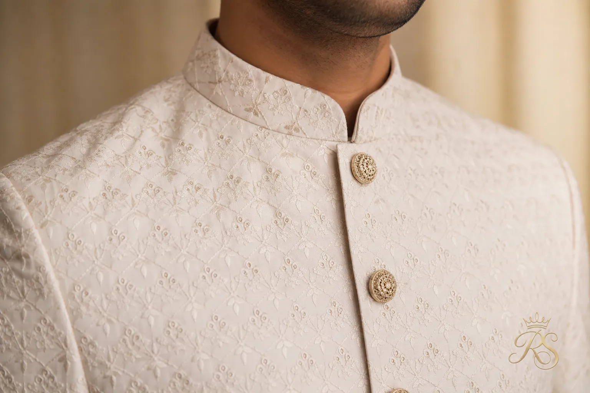
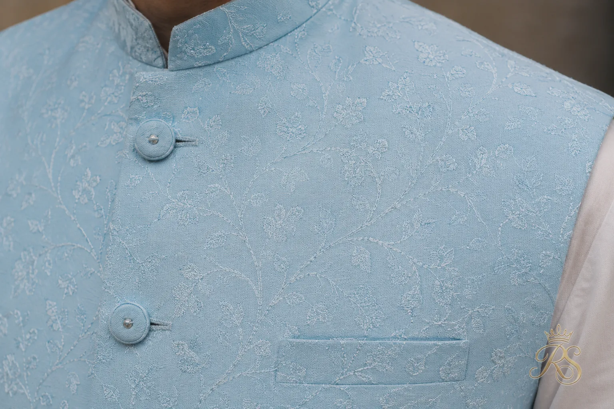
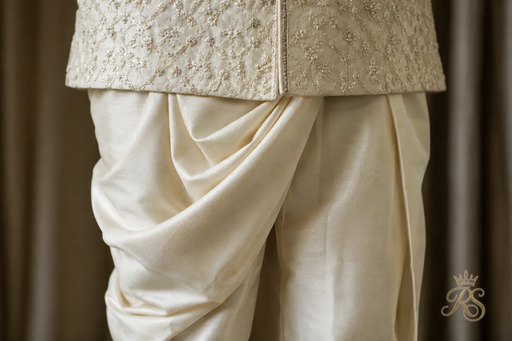
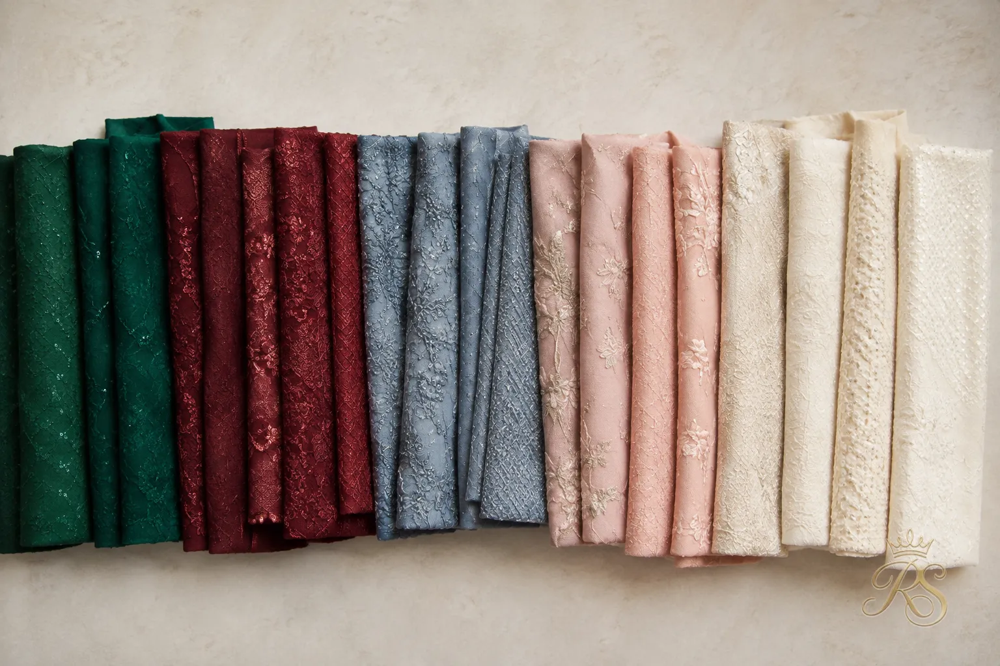
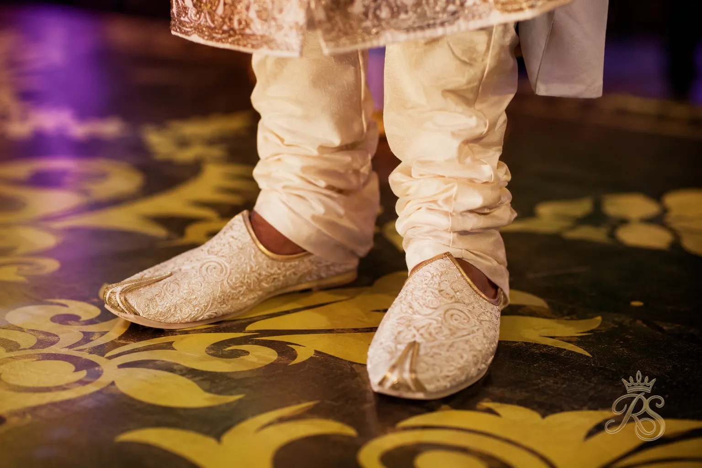
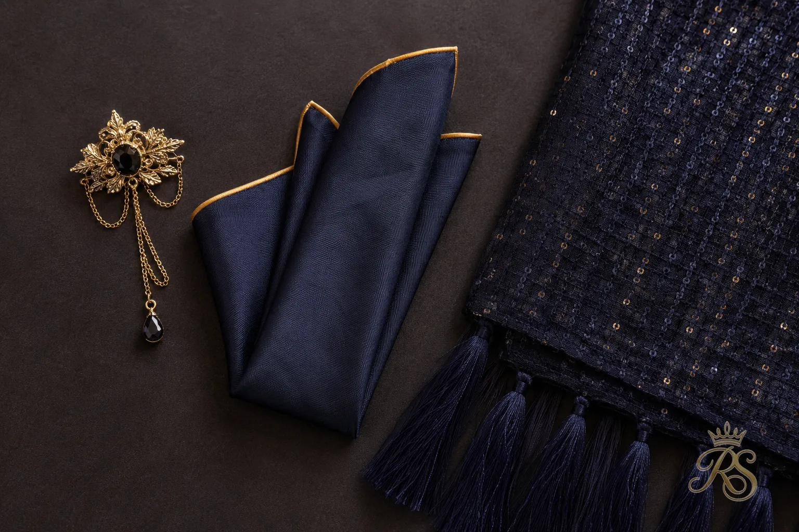
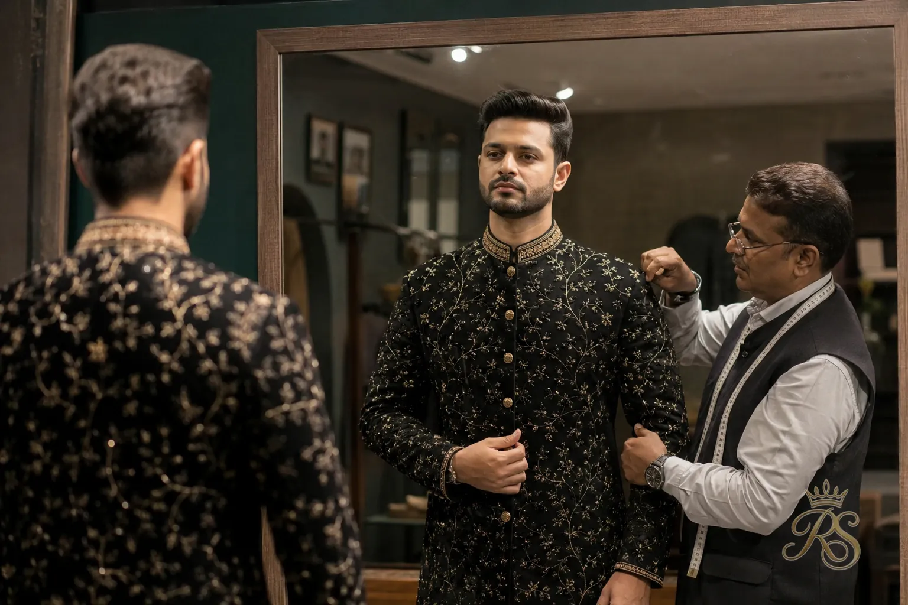
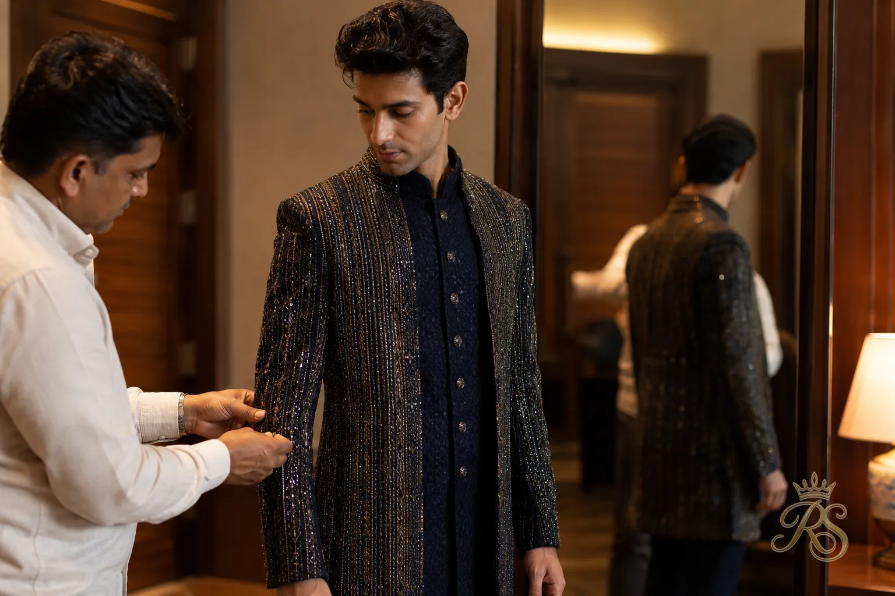
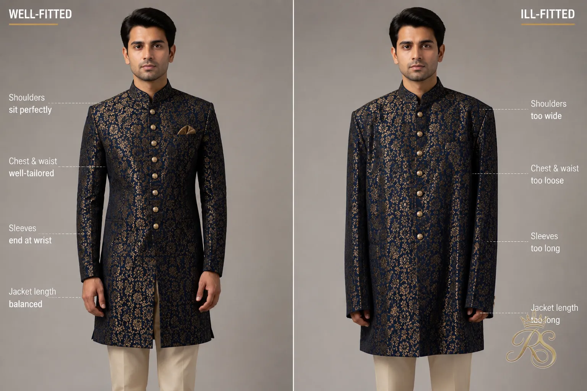

The sangeet is the one wedding function where a groom can actually have fun with his outfit — no rigid rituals dictating the palette, no heavy layers to sit through hours of ceremony, just a night built for dancing, dhol beats, and photographs. Yet most grooms still default to a plain kurta and call it done. This guide rounds up 15 outfit ideas that balance movement, personality, and photograph-ready style, so the groom's sangeet look gets remembered for the right reasons.
Why Your Sangeet Outfit Deserves Its Own Look
Unlike the wedding day outfit, the sangeet look isn't bound by ritual color codes or heavy traditional layering — which makes it the easiest function to actually experiment in. It's also the outfit that has to survive hours of dancing, so fit and fabric matter as much as design.

Start here: pick the fabric and fit before the color — comfort on the dance floor comes first.
Book your sangeet outfit fitting at least three weeks out. Between rehearsals and last-minute alterations, cutting it close is the most common regret grooms mention afterward.
The Indo-Western Bandhgala Jacket
A fitted bandhgala jacket thrown over a simple kurta or even a plain shirt instantly reads sharp and modern — it's become the go-to sangeet silhouette for grooms who want structure without the weight of a full sherwani.
A structured bandhgala silhouette photographs beautifully under sangeet stage lighting.

Mandarin collar detailing is what separates a sangeet bandhgala from a wedding-day one — keep it lighter.
Printed Silk Kurta Set
A digitally printed or block-printed silk kurta set brings pattern and color without needing a jacket layer at all — ideal for grooms who'd rather move freely through a three-hour dance set than manage layers.
No jacket needed: a bold print does the visual work a bandhgala layer usually does.
Stick to one dominant print — a busy pattern on both the kurta and the stole tends to compete with the couple's coordinated sangeet decor rather than complement it.
Pastel Nehru Jacket
Soft dusty blues, sage greens, and blush tones have become a favorite for daytime and evening sangeets alike — a pastel Nehru jacket keeps the look festive without tipping into the deep jewel tones reserved for the main wedding day.
Pastels pair especially well with sangeet decor that leans floral or garden-themed.

Subtle self-tone embroidery adds texture without pulling focus from the bride's outfit.
Statement Jacket with Denim
For a sangeet that's more lounge party than traditional function, an embellished or textured jacket worn over well-fitted dark denim gives an Indo-Western edge that still photographs as festive.
Confirm the dress code first — this look works best for sangeets styled as an evening party rather than a traditional function.
Velvet Kurta for Winter Sangeets
Winter wedding season calls for heavier fabric, and a velvet kurta in jewel tones like emerald, wine, or midnight blue holds up to both the cold and the camera flash far better than lightweight cotton or silk.
Deep jewel-toned velvet catches stage lighting without needing heavy embellishment.
Velvet's texture alone adds richness — skip heavy embroidery to avoid overheating on the dance floor.
Matching Co-ord Kurta-Jacket Set
A pre-coordinated kurta and jacket set — cut from the same fabric and finished with matching detailing — takes the guesswork out of pairing and gives a polished, put-together silhouette straight off the rack or tailor.
One fabric, two pieces: a co-ord set removes the risk of clashing textures or tones.
Dhoti Pants with a Contemporary Jacket
Swapping the churidar for tailored dhoti pants brings a distinctly regional, movement-friendly silhouette to the sangeet — the draped fit gives more room to dance than a fitted trouser ever could.
A shorter jacket length keeps the dhoti drape visible instead of hiding it.

Pre-stitched dhoti pants hold the drape all night without needing readjustment between dances.
Sherwani-Lite Layering
A shorter, unlined sherwani — sometimes called a "sherwani-lite" — gives the grandeur of the traditional silhouette in a fabric weight that's actually wearable for a full night of dancing.
Grandeur without the weight: ask the tailor to skip the inner lining for a breathable sangeet version.
"The best sangeet outfit isn't the one that looks the most regal standing still — it's the one that still looks sharp two hours and three dance numbers later."
Choosing Your Sangeet Color Palette
Sangeet outfits give grooms far more color freedom than the wedding day itself, but a few coordination basics still keep the couple's photographs looking intentional rather than mismatched.

Coordinate one shared tone with the bride's outfit rather than matching the entire palette.
| Palette | Best For | Pairing Tip |
|---|---|---|
| Jewel tones (emerald, wine, teal) | Evening & winter sangeets | Pair with gold or antique brass accessories |
| Pastels (blush, sage, dusty blue) | Daytime & garden-themed sangeets | Keep accessories minimal and matte |
| Neutrals (ivory, beige, dove grey) | Minimalist or destination sangeets | Add one statement accessory for contrast |
| Black & metallics | Lounge-party style sangeets | Best kept for evening functions only |
Footwear & Accessories That Complete the Look
The right footwear and accessories pull the whole sangeet outfit together — and just as importantly, need to survive an entire night of dancing without slowing anyone down.

Mojaris with a slightly cushioned sole hold up far better than stiff leather for a dance-heavy night.

One statement piece — a brooch or a textured stole — is enough; skip the rest.
Styling by Body Type
The same outfit idea can look completely different depending on cut and proportion — a few adjustments based on build make sure every look above actually flatters instead of just following the trend.

Broader builds suit structured bandhgalas and single-breasted jackets over heavily layered ones.

A slimmer build can carry layered jackets and dhoti drapes that add visual volume.
- Taller grooms can experiment with longer jacket lengths without looking overwhelmed
- Shorter grooms should keep the jacket hem above mid-thigh to avoid shortening the frame
- Whatever the build, the shoulder seam should sit exactly at the shoulder bone — never beyond it
Common Sangeet Outfit Mistakes to Avoid
Most sangeet outfit regrets aren't about the design at all — they're about comfort and planning decisions made too late to fix before the function.

A jacket that's even slightly tight across the shoulders becomes obvious the moment the dancing starts.
- Choosing a heavily embellished outfit that snags on the bride's or family's outfits mid-dance
- Skipping the dance rehearsal in the actual outfit — or at least the shoes
- Picking a fabric that shows sweat marks under stage lighting
- Leaving the final fitting until the week of the wedding, when tailors are booked solid
Final Thoughts
Comfort first, style second — the outfit that lets him actually enjoy the night is always the right one.
The best sangeet outfit is the one the groom forgets he's wearing by the third song — sharp in photographs, easy to move in, and coordinated without being an exact match to the bride. Pick a silhouette from this list, get it properly fitted, and the rest of the night takes care of itself.
"A sangeet outfit isn't judged standing still for the camera — it's judged mid-spin, under the lights, three songs in."